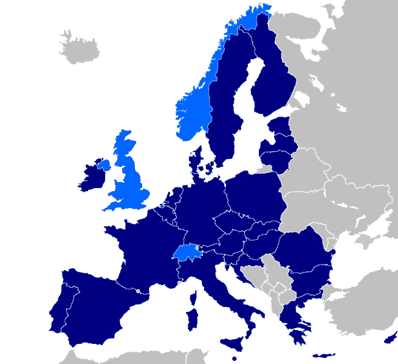

The Club de Berne
Intelligence Sharing Forum
The Club de Berne: Europe's Secretive Intelligence Network

Overview
The Club de Berne is an influential yet secretive intelligence-sharing forum that unites the intelligence services of European Union (EU) member states, along with Norway and Switzerland. Established in 1969, the organization operates outside formal EU structures, facilitating voluntary exchange of intelligence to enhance collective security. This document explores the Club de Berne's structure, activities, and the role it plays in European intelligence cooperation.
Identify
Organization
- Name: The Club de Berne
- Other Names: No known aliases; commonly referred to by its original name.
Known Individuals
The Club de Berne is composed of the heads of European intelligence services. Specific individuals are not publicly disclosed due to the sensitive nature of their roles and the organization's emphasis on secrecy.
Summary
Founded in 1969 and named after the city of Bern, Switzerland, the Club de Berne has evolved to become a cornerstone of European intelligence collaboration. Operating outside formal EU institutions and without direct democratic oversight, it facilitates the voluntary exchange of intelligence, experiences, and viewpoints among its members. The organization's primary focus areas include counterterrorism, counterintelligence, and addressing emerging security threats.
Specializations and Activities
- Counterterrorism Intelligence Sharing: Coordinating efforts to prevent and respond to terrorist activities across Europe.
- Counterintelligence Operations: Protecting member states from espionage and intelligence threats.
- Secure Communication Networks: Operating specialized networks like "Capriccio" for Islamic extremism and "Toccata" for non-Islamic terrorism to share sensitive information.
- Policy Coordination: Aligning security policies and strategies among member nations to address common threats.
- Expert Collaboration: Facilitating meetings and working groups to tackle specific security challenges.
Activities
Notable Initiatives
- Counter Terrorism Group (CTG): An offshoot focused on terrorism intelligence that provides threat assessments to EU policymakers and promotes expert collaboration.
- Security Assessments: Conducts audits and evaluations of member agencies to ensure effective intelligence operations and adherence to best practices.
- International Collaborations: Engages with non-European agencies like the FBI, CIA, and Mossad to enhance global intelligence cooperation.
Motivations
- Collective Security: Enhancing the safety and security of member nations through shared intelligence and coordinated efforts.
- Proactive Threat Management: Identifying and neutralizing threats before they materialize to prevent security incidents.
- Strategic Advantage: Maintaining a competitive edge in intelligence operations on a global scale.
Detect and Track
Detection Strategies
While the Club de Berne itself is not a threat actor, understanding its activities can be important for transparency, policy-making, and ensuring democratic oversight.
- Open-Source Intelligence (OSINT): Monitoring publicly available information, such as reports and publications, for insights into the organization's focus areas.
- Inter-Agency Collaboration: Engaging with national intelligence agencies to gain permissible insights into collective activities and initiatives.
- Academic Research: Supporting studies and analyses that examine the impact and operations of intelligence-sharing forums like the Club de Berne.
Tracking Plan
- Policy Monitoring: Keeping track of policy changes and security initiatives that may result from the Club de Berne's activities.
- International Cooperation: Fostering relationships with member states to promote transparency and information sharing.
- Security Forums and Conferences: Participating in global security events where members might discuss relevant issues openly.
- Legislative Oversight: Advocating for increased democratic oversight to ensure the organization's activities align with public interests and legal frameworks.
- Media Analysis: Monitoring reputable news outlets and investigative journalism for reports on the organization's influence and operations.
Conclusion
The Club de Berne plays a significant role in enhancing European intelligence cooperation by facilitating the exchange of critical security information among member states. Understanding its structure, activities, and impact is essential for stakeholders aiming to balance effective intelligence sharing with the need for transparency and democratic accountability. As security threats continue to evolve, the organization's ability to adapt and collaborate will remain pivotal in safeguarding European interests.